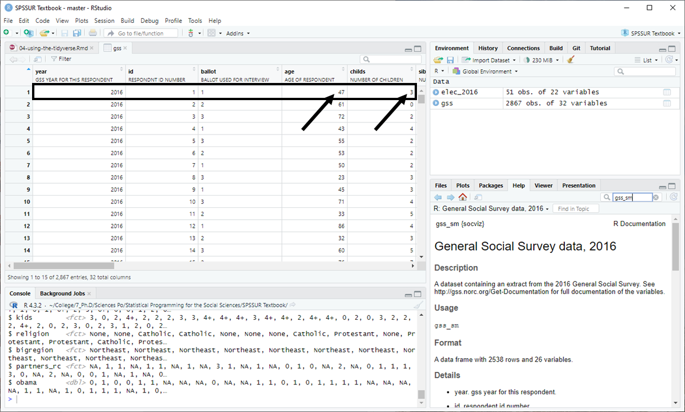

Chapter 3 Summarizing Data with dplyr
In the previous chapter, you learned how to load data from a package, how to access a column from a tibble using the subset operator $, and how to use basic functions to answer questions like: what was the total number of votes cast in the 2016 U.S. presidential election?
We’ve had a couple strokes of luck so far. Our data has been nice and tidy and our questions haven’t really required us to poke around in our data to find the answers we are interested in. This brings us to data wrangling - the art and science of manipulating, distilling, or cajoling data into a format that allows you to find the answers you are seeking.
For this lesson, we are going to continue to maintain the illusion of neat and tidy data and focus on learning the tools necessary to dig deeper into a data set: in particular, dplyr and the pipe operator. In the next lesson, our luck will run out and we will be confronted with the harsh reality of unseemly data.3
3.1 Basic Description with Base R
Let’s use an example to get us started. Last class, you toyed around with the 2016 U.S. presidential election data from the socviz package, a helpful collection of data sets and other goodies developed by Kieran Healy.4
We’ll use another data set from the same package in a moment, but, for now, let’s return to the election data. We’re also going to re-load our new best friend, the tidyverse package.
Libraries loaded. Remember, once you have the packages installed, you don’t need to do it again. So, don’t include install.packages() in your scripts going forward.5
We’ll load the data into an object in our environment. This time, we’ll use a slightly shorter name for the tibble to spare ourselves some future misery. Longer names mean more to retype later.
Just like last time, we can do basic calculations on columns. We can use the same principles to try out a few new functions:
# table() gives a contingency table for character variables.
# Here's the number of states (plus D.C.) won by each candidate.
table(elec_2016$winner)##
## Clinton Trump
## 21 30# Wrapping prop.table() around a contingency table gives relative frequencies.
# i.e., Hillary Clinton won 41.2% (21/51) of states (plus Washington D.C.).
prop.table(table(elec_2016$winner))##
## Clinton Trump
## 0.4117647 0.5882353# summary() gives us a nice 5-number summary for numeric variables.
# Here we see the min, max, median, mean, and quartiles for the pop. vote margin.
summary(elec_2016$vote_margin)## Min. 1st Qu. Median Mean 3rd Qu. Max.
## 2736 96382 212030 383997 522207 4269978But, what if we want to do something more specific?
What if we really want to know how much of the popular vote third-party Libertarian candidate Gary Johnson won across the different regions of the United States? Here we need special functions from dplyr and the pipe operator.
# An illustrative example - no need to try this yet
elec_2016 %>%
group_by(census) %>%
summarize(total = sum(johnson_vote))## # A tibble: 4 × 2
## census total
## <chr> <dbl>
## 1 Midwest 1203062
## 2 Northeast 676192
## 3 South 1370056
## 4 West 1239925We’ll learn how to create frequency tables like this and more in a moment.
3.2 The Pipe Operator

The pipe operator is a handy tool indeed. It is a specialized operator that comes from the maggritr package, which itself is contained in the tidyverse.
It looks like this: %>%. But, it can also look like this: |>.
There isn’t much of a difference between the two, so you can use whichever you prefer as long as you are consistent.6
The pipe operator has a straightforward function: it allows you to combine a series of steps into a single command. And, it does this in a way that makes your code legible. Whenever you see the pipe operator, you should read it as though it is saying, “And then [do this].”
So in the previous example provided, you might read it as:
elec_2016 %>% # Take the election data AND THEN
group_by(census) %>% # group it by census region AND THEN
summarize(total = sum(johnson_vote)) # sum up the Johnson vote.Note a couple of things here:
The pipe operator always goes at the end of each line, followed by a new line
The pipe operator never goes at the end of the command
The first is a convention to make the code more readable and the second is a requirement. If you leave a pipe operator at the end of your statement, R will search for the missing code and then give you an unfriendly error when you try to run more code. Don’t leave a pipe operator hanging.
3.3 Functions from dplyr
dplyr (pronounced dee-ply-R) is a set of tools for working with tabular data. It’s one of the packages in tidyverse (along with ggplot2, tidyr, tibble, readr, and a few others), so you don’t have to load it separately.
dplyr has a handful of special functions:
group_by(), which groups data together at some desired level (e.g., states by census region)filter(), which gives us the rows corresponding to the criteria entered as an argumentselect(), which selects columns from the original datasummarize()orsummarise(), which performs calculations7mutate(), which creates new columns (or variables)arrange(), which sorts the row order by column values
3.4 Glimpsing GSS Data
Let’s load another data set from socviz. This one is called gss_sm and contains a nice, clean extract from the 2016 General Social Survey.
The General Social Survey is a nationally representative biennial survey of U.S. adults on sociological topics produced by the National Opinion Research Center (NORC) at the University of Chicago since 1972.
Take a quick look at the data. You can use glimpse(), another dplyr function, to get a sense of what’s inside and you can inspect it visually using view(). Typing in ?gss_sm (the original name of the data set from the package) will tell you what variables the data contains.8
There’s a wealth of data in here. You may have also noticed that the data here is at the individual-level. Each row represents an individual respondent (identified by the id variable) and each column consists of a variable (in this case, a coded response to a survey question).
If we click on our data in the environment pane, we can see that the first data row corresponds to respondent #1 who is 47 years old and has 3 children:

3.5 Selecting Columns
There are a lot of variables, 32 of them, in fact. Maybe we want to narrow in and look at just a few of them, like: id, sex, and religion. We can use the select() function to do this.
gss %>% # Take the GSS data AND THEN
select(id, sex, religion) # take just the ID, sex, and religion columns.## # A tibble: 2,867 × 3
## id sex religion
## <dbl> <fct> <fct>
## 1 1 Male None
## 2 2 Male None
## 3 3 Male Catholic
## 4 4 Female Catholic
## 5 5 Female None
## 6 6 Female None
## 7 7 Male None
## 8 8 Female Catholic
## 9 9 Male Protestant
## 10 10 Male None
## # ℹ 2,857 more rowsIn the code above, we told R that we wanted to take the GSS data and then only the id, sex, and religion variables. The select function output a new tibble containing only those three variables that were entered as arguments. The number of rows or observations, 2,867, is the same as in the original data.
We can now save a copy of this new tibble by assigning it to a new object. Let’s call this new object gender_relig.
Now we have a new object containing our new tibble. If you inspect this new tibble and then decide that you don’t need or want it anymore, you can always get rid of it using the rm() function.9
3.6 Grouping and Summarizing
Let’s say we want to get a table which shows the number of respondents by religious affiliation. There are other ways of doing this, but we’re going to use dplyr and the pipe operator.
To do this, we first have to tell R how we would like to group the data. Grouping doesn’t visibly change the data, but it prepares R to interpret our next commands according to the groups we specify. We’re going to group by the religion variable which contains the respondent’s religious affiliation.
## # A tibble: 2,867 × 32
## # Groups: religion [6]
## year id ballot age childs sibs degree race sex region income16
## <dbl> <dbl> <labelled> <dbl> <dbl> <labe> <fct> <fct> <fct> <fct> <fct>
## 1 2016 1 1 47 3 2 Bache… White Male New E… $170000…
## 2 2016 2 2 61 0 3 High … White Male New E… $50000 …
## 3 2016 3 3 72 2 3 Bache… White Male New E… $75000 …
## 4 2016 4 1 43 4 3 High … White Fema… New E… $170000…
## 5 2016 5 3 55 2 2 Gradu… White Fema… New E… $170000…
## 6 2016 6 2 53 2 2 Junio… White Fema… New E… $60000 …
## 7 2016 7 1 50 2 2 High … White Male New E… $170000…
## 8 2016 8 3 23 3 6 High … Other Fema… Middl… $30000 …
## 9 2016 9 1 45 3 5 High … Black Male Middl… $60000 …
## 10 2016 10 3 71 4 1 Junio… White Male Middl… $60000 …
## # ℹ 2,857 more rows
## # ℹ 21 more variables: relig <fct>, marital <fct>, padeg <fct>, madeg <fct>,
## # partyid <fct>, polviews <fct>, happy <fct>, partners <fct>, grass <fct>,
## # zodiac <fct>, pres12 <labelled>, wtssall <dbl>, income_rc <fct>,
## # agegrp <fct>, ageq <fct>, siblings <fct>, kids <fct>, religion <fct>,
## # bigregion <fct>, partners_rc <fct>, obama <dbl>As you can see, our data doesn’t appear to have changed in the output above. We still have 32 variables and 2,867 observations. But, we do actually get a helpful note at the top our output that says, Groups: religion[6]. Our observations have been successfully grouped according to the six religious affiliations in our data.
Next, we have to add another line to our pipe function which specifies how we want to summarize() the groups. We want it to count up our rows, so we’ll use the n() function. The n() function just counts the number of rows in a data frame.10 We have to tell summarize() where we want to store these values, so we’ll put them in a new variable called total.
gss %>%
group_by(religion) %>% # Group by religion
summarize(total = n()) # Create a total by counting the rows## # A tibble: 6 × 2
## religion total
## <fct> <int>
## 1 Protestant 1371
## 2 Catholic 649
## 3 Jewish 51
## 4 None 619
## 5 Other 159
## 6 <NA> 18As you can see, we provided summarize() with a new column name, total, and a measurement, n(). Now, we have the total number of respondents for each group (religious affiliation). The pipe operator allowed us to combine the group() and summarize() functions together in sequence so that we got the analysis we wanted..
If we want, we can save a copy of our new tibble in another object, as in the command below. The original data object in our environment (i.e.., gss) will always be untouched unless we intentionally re-write it (i.e., gss <- gss %>% ...).
Another quick example. Let’s say we want to see the count of our 2016 GSS respondents by sex:
## # A tibble: 2 × 2
## sex total
## <fct> <int>
## 1 Male 1276
## 2 Female 1591In this example, we took the GSS data and then grouped it by sex and then summarized it by creating a total which contains a count of the number of rows.
In this case, because we have tidy data (more on this in future lessons), the number of rows corresponds to the number of respondents who took the 2016 GSS. We can see that 1,276 of our respondents were male and 1,591 were female.
3.6.1 Grouping by Two Variables
We can also create the equivalent of what is called a two-way contingency table by grouping with two variables at the same time. We can use this to find religious affiliation by sex, for example:
## `summarise()` has grouped output by 'religion'. You can override using the
## `.groups` argument.## # A tibble: 12 × 3
## # Groups: religion [6]
## religion sex total
## <fct> <fct> <int>
## 1 Protestant Male 559
## 2 Protestant Female 812
## 3 Catholic Male 287
## 4 Catholic Female 362
## 5 Jewish Male 22
## 6 Jewish Female 29
## 7 None Male 339
## 8 None Female 280
## 9 Other Male 58
## 10 Other Female 101
## 11 <NA> Male 11
## 12 <NA> Female 7In the table above, we can now identify the number of protestants who are male and the number of protestants who are female.
3.6.2 The Order of group() arguments
It is worth noting that the ordering of groups as arguments in the group() function sometimes matters (i.e., group_by(religion, sex) as opposed to group_by(sex, religion).
Because religion came first in our argument order, our results show us the number of protestants who are male and the number of protestants who are female. But we could have very easily shown the number of males who are protestant and the number of females who are protestant.
For a count, it does not matter. The number of protestants who are male is the same as the number of males who are protestant. But, when we start looking at relative frequencies and percentages, the order does matter. You’ll get a sense for this in a moment.
3.7 Calculating with mutate()
Is there an equivalent proportion of males and females among protestants in the GSS? Let’s add a relative frequency column to find out.
gss %>%
group_by(religion, sex) %>%
summarize(total = n()) %>%
mutate(freq = total / sum(total),
pct = round((freq*100), 1))## `summarise()` has grouped output by 'religion'. You can override using the
## `.groups` argument.## # A tibble: 12 × 5
## # Groups: religion [6]
## religion sex total freq pct
## <fct> <fct> <int> <dbl> <dbl>
## 1 Protestant Male 559 0.408 40.8
## 2 Protestant Female 812 0.592 59.2
## 3 Catholic Male 287 0.442 44.2
## 4 Catholic Female 362 0.558 55.8
## 5 Jewish Male 22 0.431 43.1
## 6 Jewish Female 29 0.569 56.9
## 7 None Male 339 0.548 54.8
## 8 None Female 280 0.452 45.2
## 9 Other Male 58 0.365 36.5
## 10 Other Female 101 0.635 63.5
## 11 <NA> Male 11 0.611 61.1
## 12 <NA> Female 7 0.389 38.9Notice, we used the same code as before here, but now we’ve added another step, a mutate() function to create two new columns, freq (relative frequency) and pct (percentage).
We previously calculated the total or the number of observations for each sub-group (e.g., protestants who are males, protestants who are females, etc.). The mutate() function takes the total we calculated in the previous step and uses it to calculate first the relative frequency and then the percentage for each sub-group.
To calculate the relative frequency, we used freq = total / sum(total) or in plain English “create a new value called freq and then calculate this value by taking the number of observations for each sub-group (total) and then dividing it by the sum of the totals for all sub-groups (sum(total)).”
For the religious group protestant, we have two sub-groups, male and female, and so the frequency for males protestants is calculated as 559 / (559 + 812), which equals 0.408 , or exactly what you see in the first row in the frequency column in our new tibble. Similarly, the frequency for female protestants would be 812 / (559 + 812) or 0.592 or what you see in the frequency column in the second row of our new tibble.
What about the percentage or pct? In the second argument of our mutate() function, we told R to take the freq we calculated in the previous step, multiply it by 100 (to make it a percentage), and then round it to the first decimal place using the round() function. 0.408, the relative frequency of male protestants, therefore becomes 40.8%.
As you can see, calculating relative frequencies and percentages using dplyr and the pipe function can be a bit of a beast. The good news is that the general form is always the same and so you’ll be able to re-use the code often.
3.8 How R Reads Functions
In the previous examples, you may have noticed a bunch of nested functions, which is when a function is used as an argument inside another functions, e.g., summarize(total = n()). It’s worth pausing for a moment to think about how R reads code, since you will be using these types of constructions quite often.
Functions are always read inside out, so a nested function will always evaluate the inner-most function first. Pipe operations, on the other hand, are always read from left-to-right or top-to-bottom (if you’re breaking up your code using new lines, as you should be). The two commands below evaluate in the same way, but R reads them in a slightly different ordering.
## [1] 6# Left-to-right/top-to-bottom (sequential) evaluation
c(1,2,3) %>% # A vector is created AND THEN
sum() # it is summed## [1] 63.9 Filtering
Back to the data. What if we only wanted to see the protestant results for our previous examples? We can use a filter() function.
gss %>%
group_by(religion, sex) %>%
summarize(total = n()) %>%
mutate(freq = total / sum(total),
pct = round((freq*100), 1)) %>%
filter(religion == "Protestant")## `summarise()` has grouped output by 'religion'. You can override using the
## `.groups` argument.## # A tibble: 2 × 5
## # Groups: religion [1]
## religion sex total freq pct
## <fct> <fct> <int> <dbl> <dbl>
## 1 Protestant Male 559 0.408 40.8
## 2 Protestant Female 812 0.592 59.2In a filter function, you use logical and comparison operators (see the slides from Session 3 if you’d like a refresher) to define the criteria for your new tibble. In this case, we want only the observations for which the religion variable is equal to “Protestant”.
R is case-sensitive and so if the values in your data are “protestant”, for example, you won’t see those results in the tibble output here.
Here’s another example using filter(). Usually, you will want to use the filter() function at the beginning of your query. This time, I’m only interested in religious affiliation among holders of graduate degrees.
gss %>%
filter(degree == 'Graduate') %>%
group_by(religion) %>%
summarize(total = n()) %>%
mutate(freq = total / sum(total),
pct = round((freq*100), 1))## # A tibble: 6 × 4
## religion total freq pct
## <fct> <int> <dbl> <dbl>
## 1 Protestant 126 0.396 39.6
## 2 Catholic 63 0.198 19.8
## 3 Jewish 15 0.0472 4.7
## 4 None 82 0.258 25.8
## 5 Other 31 0.0975 9.7
## 6 <NA> 1 0.00314 0.3Now, we see that 39.6% of graduate-degree holding respondents were protestant and 25.8% had no religious affiliation. Later on, we’ll learn how to turn this sort of thing into a nice graph.
# What happens if I use a lower-case 'g' in 'Graduate' instead?
gss %>%
filter(degree == 'graduate') %>%
group_by(religion) %>%
summarize(total = n()) %>%
mutate(freq = total / sum(total),
pct = round((freq*100), 1))## # A tibble: 0 × 4
## # ℹ 4 variables: religion <fct>, total <int>, freq <dbl>, pct <dbl>3.10 Conditional Filtering
What if we want to filter our respondents for multiple degree types? We want to see in our table of religious affiliation, for example, only people who have a bachelor’s degree or a graduate degree.
For these types of queries, we can use other logical operators in our filter() criteria. Here, specifically, we’ll use | which stands for ‘or’.
gss %>%
filter(degree == 'Graduate' | degree == 'Bachelor') %>%
group_by(religion) %>%
summarize(total = n()) %>%
mutate(freq = total / sum(total),
pct = round((freq*100), 1))## # A tibble: 6 × 4
## religion total freq pct
## <fct> <int> <dbl> <dbl>
## 1 Protestant 367 0.430 43
## 2 Catholic 193 0.226 22.6
## 3 Jewish 27 0.0316 3.2
## 4 None 204 0.239 23.9
## 5 Other 59 0.0691 6.9
## 6 <NA> 4 0.00468 0.5Now our results include only college graduates and graduate degree holders. If we want to see them broken out separately after we have filtered, all we need to do is change group_by(religion) to group_by(religion, degree).
What if we want to filter our observations for all individuals with less than a bachelor’s degree? We can create a vector with our specific criteria and then use it in our filter argument. Look at this:
filter_criteria <- c('Lt High School', 'High School', 'Junior College')
gss %>%
filter(degree %in% filter_criteria) %>%
group_by(religion, degree) %>%
summarize(total = n()) %>%
mutate(freq = total / sum(total),
pct = round((freq*100), 1))## `summarise()` has grouped output by 'religion'. You can override using the
## `.groups` argument.## # A tibble: 17 × 5
## # Groups: religion [6]
## religion degree total freq pct
## <fct> <fct> <int> <dbl> <dbl>
## 1 Protestant Lt High School 155 0.155 15.5
## 2 Protestant High School 742 0.740 74
## 3 Protestant Junior College 106 0.106 10.6
## 4 Catholic Lt High School 100 0.220 22
## 5 Catholic High School 322 0.708 70.8
## 6 Catholic Junior College 33 0.0725 7.3
## 7 Jewish Lt High School 1 0.0417 4.2
## 8 Jewish High School 17 0.708 70.8
## 9 Jewish Junior College 6 0.25 25
## 10 None Lt High School 62 0.150 15
## 11 None High School 298 0.722 72.2
## 12 None Junior College 53 0.128 12.8
## 13 Other Lt High School 10 0.1 10
## 14 Other High School 73 0.73 73
## 15 Other Junior College 17 0.17 17
## 16 <NA> High School 9 0.9 90
## 17 <NA> Junior College 1 0.1 10We’ve first created a vector, called filter_criteria, with all of the degree-levels we want to include in our data (we’ve left out ‘Graduate’ and ‘Bachelor’). Then, we’ve changed the filter criteria to say, “Take all respondents who have a degree listed in our vector, filter_criteria.” In code, we write this as: filter(degree %in% filter_criteria).
3.10.1 The %in% Operator
%in% is a special logical operator that checks to see whether the values you are specifying are contained in an object. If the value is contained in the object, your computer will return TRUE and if not, it will return FALSE. This is especially useful for filter() since filter() selects rows based on whether they meet a criteria (TRUE) or not (FALSE).
Here’s a simple example of how this operator works in general:
## [1] TRUE## [1] FALSE3.11 Fancy Tables with kable()
If we want to make a summary table look a little bit nicer, we can add the knitr::kable() function to the end of our query to produce a more polished looking table.
gss %>%
filter(degree == 'Graduate') %>%
group_by(religion) %>%
summarize(total = n()) %>%
mutate(freq = total / sum(total),
pct = round((freq*100), 1)) %>%
knitr::kable()| religion | total | freq | pct |
|---|---|---|---|
| Protestant | 126 | 0.3962264 | 39.6 |
| Catholic | 63 | 0.1981132 | 19.8 |
| Jewish | 15 | 0.0471698 | 4.7 |
| None | 82 | 0.2578616 | 25.8 |
| Other | 31 | 0.0974843 | 9.7 |
| NA | 1 | 0.0031447 | 0.3 |
The :: operator here tells R to pull the kable() function from the knitr package (which is located in the tidyverse). This is useful when there are multiple functions with the same name in different packages.
You can also add additional code to your kable() function to customize the look of your table (see here for examples).
3.12 Another Example
What if we want to do something crazy like find all survey respondents who are protestant or catholic, voted for Obama in the 2012 U.S. Presidential election, and have children? And, we’d like to know their breakdown by relative frequency across regions of the U.S.
Here’s a brief example:
gss %>%
filter(religion == "Protestant" | religion == "Catholic") %>%
filter(obama == 1) %>%
filter(childs > 0) %>%
group_by(region) %>%
summarize(total = n()) %>%
mutate(freq = round(total / sum(total),4),
pct = round((freq*100), 1))## # A tibble: 9 × 4
## region total freq pct
## <fct> <int> <dbl> <dbl>
## 1 New England 33 0.0602 6
## 2 Middle Atlantic 57 0.104 10.4
## 3 E. Nor. Central 119 0.217 21.7
## 4 W. Nor. Central 36 0.0657 6.6
## 5 South Atlantic 121 0.221 22.1
## 6 E. Sou. Central 35 0.0639 6.4
## 7 W. Sou. Central 57 0.104 10.4
## 8 Mountain 35 0.0639 6.4
## 9 Pacific 55 0.100 10Now, we can rest easy knowing that we can find the percentage of 2012-Obama supporting Protestants and/or Catholics with children who reside in the South Atlantic census region (29.2%).
3.13 Practice Exploring Data
You can see here that the dplyr functions provide an enormous amount of flexibility and power. R, like other programming languages, is also very sensitive to mistakes in syntax or spelling: a missing comma in a set of function arguments, a hanging pipe operator, a misspelled filter criteria, or an erroneous object name can all cause output errors. Check your code carefully, take a deep breath, and try again. You’ll get the hang of it in no time.
Use the remainder of class time today to explore the gss_sm data. Try summarizing different variables according to different groupings. Try using other measures like mean() or sd() to summarize numeric variables (like the number of children).
If you are feeling overwhelmed at the moment - don’t despair, we’re going to continue practicing these skills throughout the rest of the course.
Sadly, almost all data you encounter out in the wild will be very unseemly for one reason or another. But, maybe after taking this course and ascending the ranks of government/business/academia, you too will become an evangelical for orderly data and help to make the world a tidier place.↩︎
The
socvizpackage serves as an accompaniment to Healy’s textbook, Data Visualization, which is highly recommended.↩︎Anytime you install packages, do it directly in the console. If someone needs to run your code, they should see the
library()calls in the beginning of your code after your header and will know whether they need to install additional packages or not. RStudio also has a helpful auto-prompt feature that will inform you of missing packages.Instead of the
library()function, you can also use therequire()function, which has the benefit of both loading packages if you have them already installed and installing them if you don’t.↩︎If you are interested, see here for more on the differences: https://www.tidyverse.org/blog/2023/04/base-vs-magrittr-pipe↩︎
summarize()andsummarise()are the same function, just two different spellings, the choice of which depends on who you’ve learned English from.↩︎You won’t always be able to get documentation on a data set by using the help function, unfortunately. But, in this case, it works because
socvizcomes with documentation that was downloaded when you installed the package. Note that you must refer to the data in your help query by it’s original name (?gss_smnot?gss).↩︎Using the
rm()function can help keep your environment a bit more orderly, but it isn’t always necessary since your environment will be cleared out each time you close RStudio anyways.↩︎There are other options for counting the number of rows, like the
count()ortally()functions, but I won’t use them here.↩︎